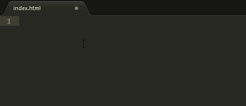
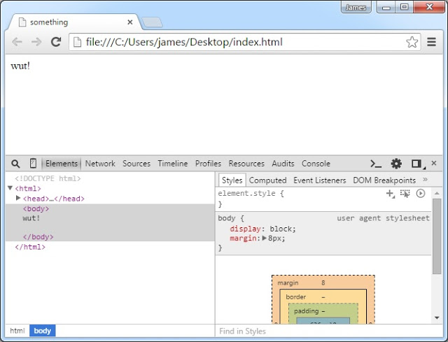

How I Work
You know that Life Hacker segment called "How I Work" full of intelligent people sharing how they do productive things? I never read those. I should because I feel like a hypocrite writing a blog post with this title. I digress, the point of this post is to help my friends.
Several people have asked me how I do web development. I understand they are looking to find easier ways of doing it, and I want to help. The truth is: I'm about to disappoint you. I do it the hard way (but there are some awesome advantages).
For starters, here is a list of software categories and the specific tools I like.
Text Editor
Sublime - because it is the same on all platforms (Mac, Linux, Windows).
Atom - I'm warming up to this one fast.
Notepad++ - the first hard core text editor I got to know, I still keep it around for sentimental reasons. I also have mad respect for their recent Sourceforge departure.
Web Browser
- Chrome - this category might seem unnecessary, but Chrome's development tools are second to none. Take a little time to play with them, look up some tutorials, it will cut down on troubleshooting (sorry Firefox--I used to love you).
Local Web Server
- Xampp - you could go through the hassle of installing Apache or IIE (eww) and setup a database and make it work with PHP, but why? Just install Xampp if you are on Windows or Mac. In Linux I Google for the all in one LAMP stack install apt-get command.
FTP Client
- Filezilla - I'm tempted to look for something new because it's hosted on Sourceforge. Take care to uncheck all the crap ware when installing. While writing this I found a download san Sourceforge (linked). I cannot vouch for being up to date or lacking crap ware.
Revision Control
- Git - whether you choose to use GitHub or BitBucket, this is the revision control of the Gods. GitHub has lots of nice charts, BitBucket allows for free private repositories. If you don't know how to use Git, check this place out. It's worth learning the command line tools.
That's it. Install them and mash the keyboard until a beautiful website comes out.
You want more?
Okay.
First things first. What are we doing? If there is no database or backend, you can skip Xampp. It's only needed for PHP and MySQL. Almost always you use PHP to get to the crud in the database (CRUD: Create, Read, Update, Delete I didn't just make that up). There are a ton of tutorials out there to help with that, but this PDO tutorial is a useful one.
I start with an empty folder (if you got this far please tell me you can make a new folder). Then I put an index.html file in there. Then I open it with Sublime, sometimes Atom. I start by typing:

Yes I type it. I don't know why, that's just how I do it. You can do it pretty quick with line duplication features all the mentioned text editors offer. There is an added bonus of looking really cool when you do in front of someone else.
At this point you should be able to open the index.html file in Chrome and see things. In Chrome on real computers, you can hit F12 to open the development tools. On a Mac I guess you have to use that single button mouse you're all so gaga about and open the tools with the menu. I have no idea how to do it on a Mac because I'm a poor college student.

I apologize if this seems patronizing and easy. It is not my intent to show off how I do things the hard way. The advantage of this method is when development gets more complex (and it will if you want it to get prettier than my "wut!" example).
You probably already know the basics of html and css, and if you want to know them better, Codecademy has you covered. Next comes JavaScript (no worries, Codecademy has that too). About half way into the JavaScript track on Codecademy, you're going to think "Damn James this is hard and you're crazy." Next let me introduce you to libraries.
About half the websites today (not a totally made up but not backed up statistic --Google it) uses a JavaScript library called jQuery. The basic goal of jQuery is to make JavaScript development easier and uniform across major web browsers. This is such a good library, it also has a course on Codecademy. Taking the time to understand JavaScript makes you pretty awesome at jQuery.
I've recently become partial to Bootstrap. All you need to know is that Boostrap is a CSS file and a JavaScript file. It's well documented and has simple examples on their website. Bootstrap is the reason so many websites look similar. Once you get to know it, you can churn out some decent looking websites in a short amount of time.
That covers just about everything. Make some files. Throw in some libraries if you want. Use Git as you go--especially if working in a group. Test on your local machine with Xampp if you need it. Then put it on your webhost with an FTP client.
No doubt there are better ways. This is my way.